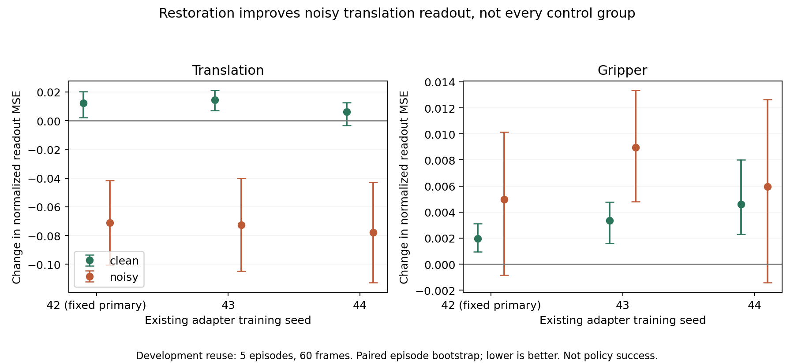

位移读出变好，
夹爪与干净输入未同步改善。
固定部署种子42：噪声下位移标准化误差下降11.84%，夹爪上升5.82%；干净输入总误差上升2.64%。这是已有验证集上的开发诊断，不是独立确认或闭环提升。
为什么不能只看恢复MSE？
同一个已训练的适配器让潜变量恢复MSE下降约34.72%，固定读出器的噪声总体误差也下降11.04%，但总体均值掩盖了平移和夹爪的不同变化。三个已有适配器种子的变化方向一致，全部保留；未挑选新部署种子。


主要种子42的噪声夹爪区间跨过零；不能声称已经证明普遍退化。开发结果没有满足“平移、夹爪同时改善”的条件，暂不追加适配器损失搜索。
在看结果前固定读出方案
使用此前缓存的当前帧48通道表征，2×2池化为192维，加16维当前本体状态。预测4个原始帧后的实际末端位移（6维）与夹爪状态（2维）。35条训练轨迹共420个唯一干净观测；两份训练噪声副本不重复计为训练样本。
视觉+本体与仅本体各拟合一个线性ridge读出器。正则系数只由训练轨迹的5折选择，候选固定为0.0001、0.01、1、100；每折单独拟合训练归一化。最终选择分别为1与0.01，并在验证评分前落盘。随后冻结读出器，评价干净、带噪、三个固定适配器种子的干净／带噪，以及循环错配视觉对照，共10条件。
冻结提交6687e266a985125b4d7e2ecf8f36222c67e60933，01:07:24CDT冻结，01:07:50启动，01:07:52完成，退出0。2CPU线程、CUDA不可见、300秒上限；没有训练适配器、编码器或策略。5项CPU门槛通过，11份冻结来源／输入未改变；保存预测的所有指标与区间独立重算通过。
全部10个条件
| 条件 | 总体NMSE | 位移NMSE | 位移RMSE mm | 夹爪NMSE | 夹爪RMSE |
|---|---|---|---|---|---|
| proprio_only | 0.47415 | 0.61977 | 14.00265 | 0.03729 | 0.08846 |
| identity_clean | 0.37003 | 0.46757 | 11.99230 | 0.07744 | 0.12747 |
| identity_noisy | 0.47140 | 0.59996 | 14.51495 | 0.08572 | 0.13411 |
| adapter42_clean | 0.37979 | 0.47993 | 12.17250 | 0.07938 | 0.12906 |
| adapter42_noisy | 0.41936 | 0.52891 | 13.21995 | 0.09070 | 0.13796 |
| adapter43_clean | 0.38165 | 0.48194 | 12.17699 | 0.08079 | 0.13020 |
| adapter43_noisy | 0.41922 | 0.52740 | 13.20700 | 0.09467 | 0.14095 |
| adapter44_clean | 0.37580 | 0.47372 | 12.08586 | 0.08203 | 0.13120 |
| adapter44_noisy | 0.41445 | 0.52205 | 13.15025 | 0.09167 | 0.13869 |
| visual_mismatch_clean | 0.45768 | 0.58381 | 12.97046 | 0.07927 | 0.12897 |
总体是8个按训练尺度标准化坐标的均值，因此位移占6/8、夹爪占2/8；并非任务成功率。夹爪RMSE使用数据中的原生单位。视觉错配将同一采样序号的图像表征换成下一条验证轨迹，保留本体和标签，是依赖诊断而非真实扰动。
每个适配器相对同条件identity
| 条件 | 总体MSE变化 | 位移MSE变化 | 夹爪MSE变化 |
|---|---|---|---|
| adapter42_clean | +2.64% | +2.64% | +2.51% |
| adapter42_noisy | -11.04% | -11.84% | +5.82% |
| adapter43_clean | +3.14% | +3.07% | +4.33% |
| adapter43_noisy | -11.07% | -12.09% | +10.45% |
| adapter44_clean | +1.56% | +1.32% | +5.93% |
| adapter44_noisy | -12.08% | -12.99% | +6.95% |
所有种子共用同5条验证轨迹和读出器，不能当作15条独立轨迹；种子42仍是原先固定的主要条件。
这能说明什么，不能说明什么？
本体基线的夹爪NMSE为0.03729，低于干净视觉+本体的0.07744；说明读出器的正则、容量和多余视觉变化也可能造成取舍。我们观察到的是固定读出器对表征变化的响应，不能据此断言S-VAE不可逆地丢失了夹爪信息。
干净视觉使位移NMSE从仅本体0.61977降至0.46757，错配视觉为0.58381；这支持该设置下视觉对读出有用，仍不能隔离预训练的因果作用。
验证的5条轨迹已经用于选适配器架构；发布表征也可能见过这些示范。没有新的独立测试轨迹，没有旋转、接触或控制器命令标签。CPU适配器使用FP32运算与BF16输入输出契约，未验证GPU数值一致性。区间仅描述这些开发轨迹，不能外推多任务性能。
贡献取舍：保持发布推理默认设置，把这个反例及按控制分组、带本体基线的读出方法写入评测材料。237行S-VAE补丁仍只测重建；本页读出脚本是独立研究材料，不冒称已经合入上游。若要声称改进，另需新轨迹和闭环方案；本轮不自动继续调权重。
本轮补齐的软件与样本检查
文档中的S-VAE CLI已在现有策略环境正常运行：既有真实训练检查点，固定3个特征clip打包为原生分片格式，CPU batch2和batch1都退出0，指标在1e-6容差内一致，检查点归一化与输入哈希保留。没有叶模块绕过，也未重装环境；torch2.7.0、transformers5.17.0、diffusers0.40.0。完整上游测试套件仍未运行；此小样本仅验证软件。
480个干净、900个带噪缓存的引用／副本、35训练和5验证轨迹划分、原始帧索引及frame+4状态标签全部核对。未打开示范测试轨迹。原采集没有逐图像哈希，因此不能追溯证明每个潜变量的字节级图像来源；当前图像和标签哈希随清单保留。原始帧号不等于物理时间戳。
方案、日志、模型系数与全部预测
- FINDINGS.md
- PROTOCOL.md
- all-conditions.csv
- audit.json
- audit.log
- audit_control_readout.py
- build_control_readout_report.py
- check_representation_preflight.py
- control_restoration_readout.py
- exit-code.txt
- launch.json
- predictions.npz
- preflight/PLAN.json
- preflight/aligned-state-targets.npz
- preflight/cli-batch1.json
- preflight/cli-batch1.log
- preflight/cli-batch2.json
- preflight/cli-batch2.log
- preflight/cli-runs.json
- preflight/fixture-manifest.json
- preflight/preflight.log
- preflight/readout-gates-final.log
- preflight/readout-gates.log
- preflight/sample-manifest.json
- preflight/validation.json
- readout-coefficients.npz
- robustness_common.py
- run.log
- selection.json
- source-manifest.json
- summary.json